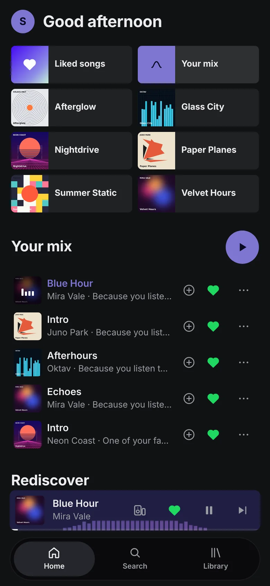
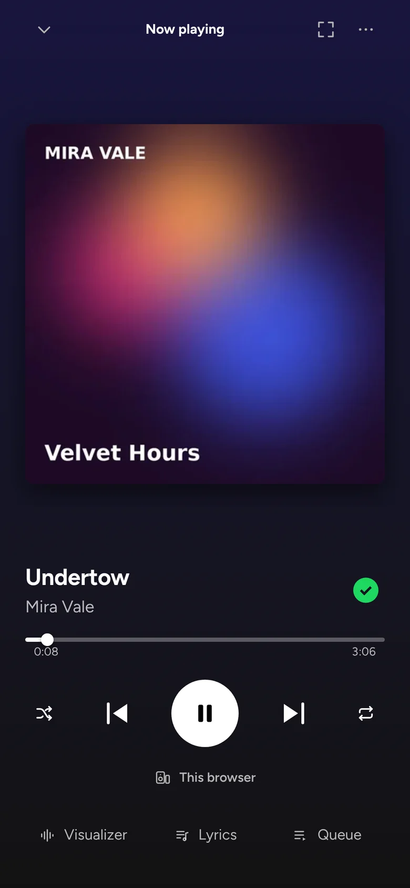
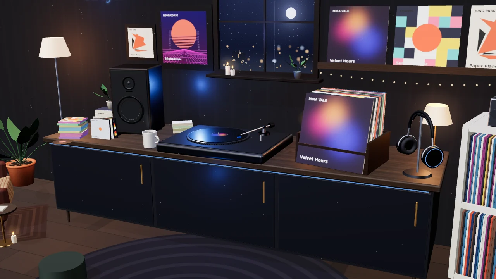
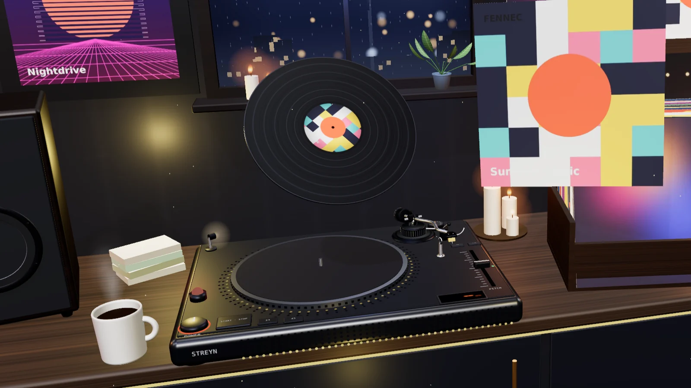
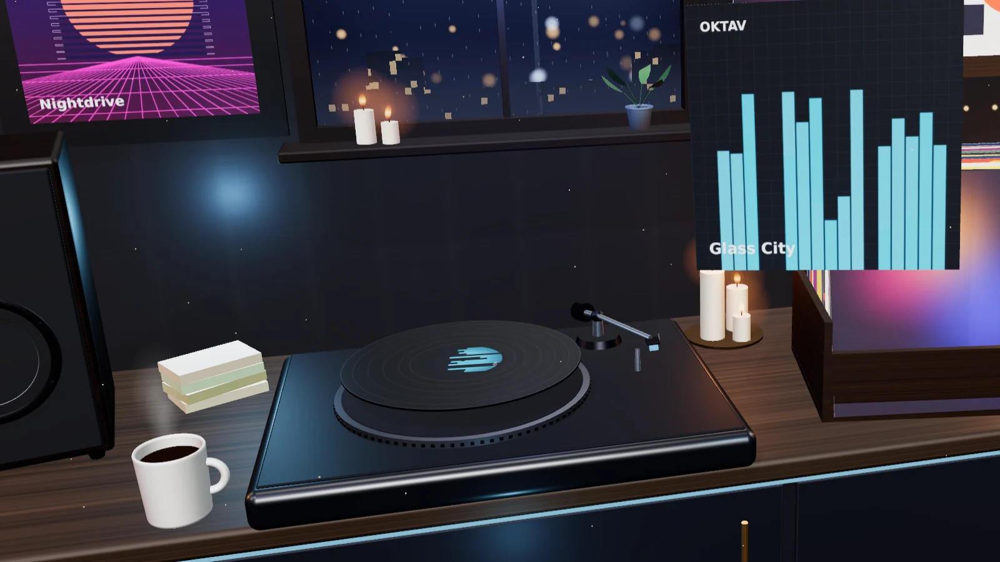

01
- NAS / Host
- Upload
- MP3 · FLAC · M4A · OGG
- Tags
- LXC
- Rust
- SQLite
- Android
- APK
- Windows · Linux
- Desktop
- Web
02













03
+3
+1
+½
−1
05
root@pve
# bash -c "$(curl -fsSL https://raw.githubusercontent.com/Labtoso/Musik/main/deploy/proxmox.sh)" ==> Creating container 120 (Debian 12) ==> Installing Streyn server ==> Done http://192.168.1.50:8484
bash
$ curl -fsSL https://raw.githubusercontent.com/Labtoso/Musik/main/deploy/install.sh | sudo bash
ZimaOS
$ curl -fsSL https://raw.githubusercontent.com/Labtoso/Musik/main/deploy/zimaos.sh | bash
bash
$ git clone https://github.com/Labtoso/Musik.git && cd Musik && docker compose up -d --build
PowerShell
> Invoke-WebRequest https://github.com/Labtoso/Musik/releases/latest/download/streyn-server-windows-x64.exe -OutFile streyn-server.exe; .\streyn-server.exe
06